Dashboard tabs
Three of the four tabs, each shown in the same ERMA Home frame. The fourth, Activity Calendar, isn't in the archive.
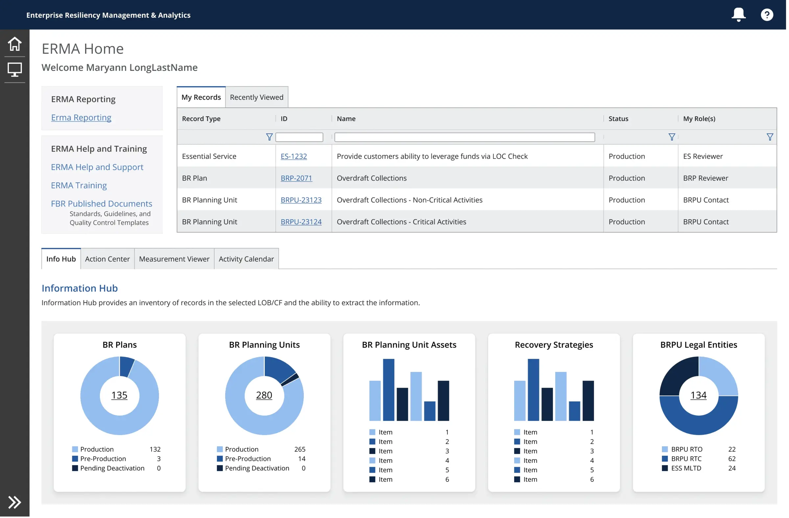
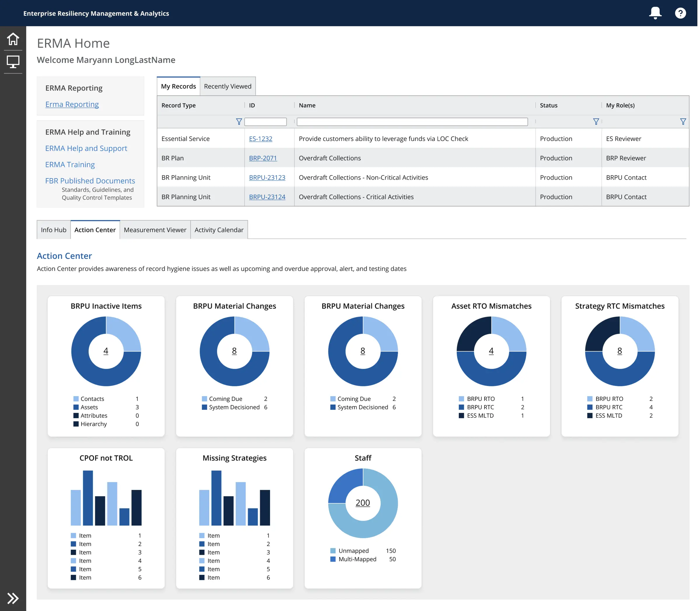
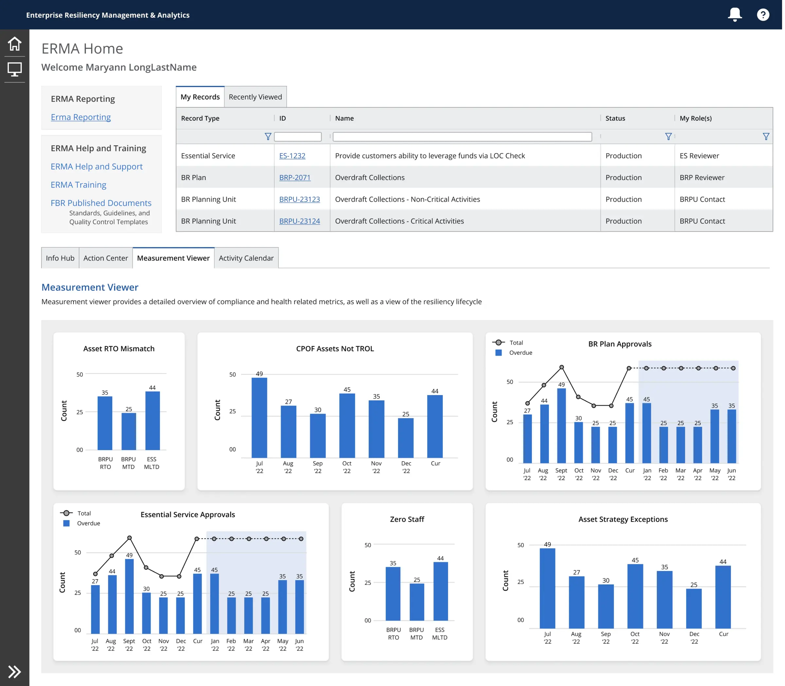
The Problem
J.P. Morgan Chase's disaster-resiliency and risk-management teams were still working from a dashboard tool that had been in place since the 1990s — not built for the volume of metrics, stakeholder variety, or regulatory precision the bank's compliance obligations now require. Every new reporting need risked becoming a one-off build, which doesn't hold up when the requirement is standing across government regulation.
My Role
I served as UX Design Lead on ERMA, a suite of tools centralizing resiliency data and risk-management activity for the bank — covering incident planning, compliance reporting, and asset/employee protection across a four-tab dashboard structure.
Approach
The critical constraint wasn't features, it was cost of scale: whatever reporting system I designed had to stay affordable to extend as new metrics and regulatory requirements inevitably got added later. Working within Chase's existing design system, I built a modular widget-and-modal pattern that could be dropped anywhere across the reporting and analytics dashboards, rather than custom-building each new report view. Information Hub — a centralized summary surfacing the key metrics from a user's network resilience plan — became the reference implementation for that pattern.
Widget system
From template to production: the zones every widget reserves, the widgets built from them, and the card in two states.
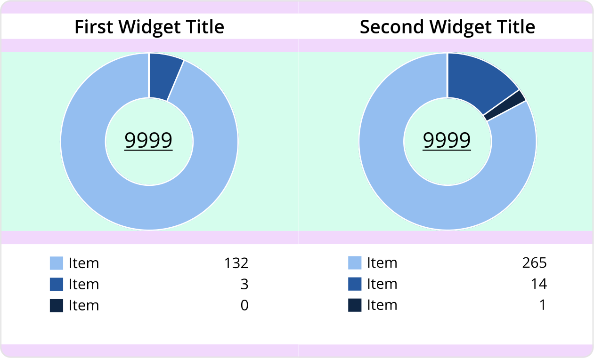
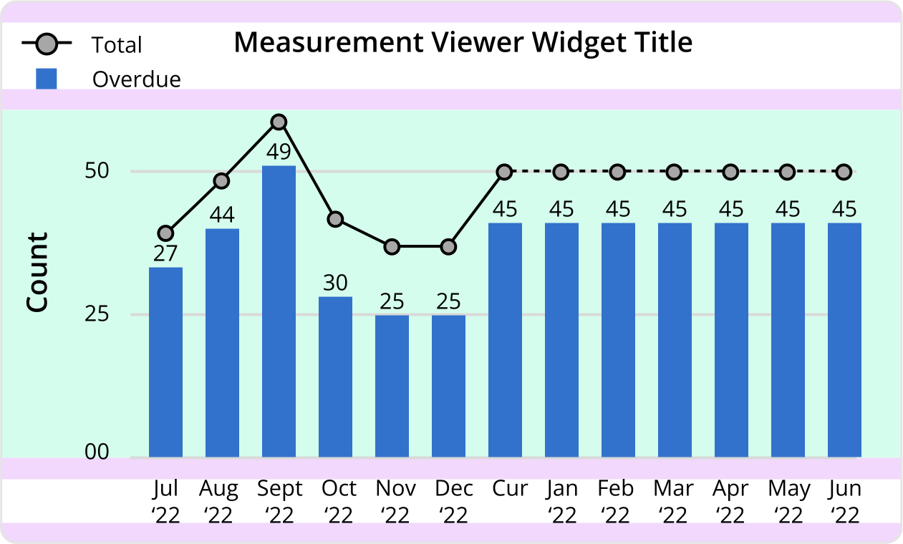
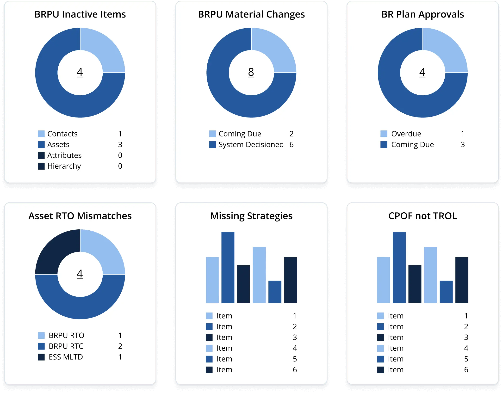
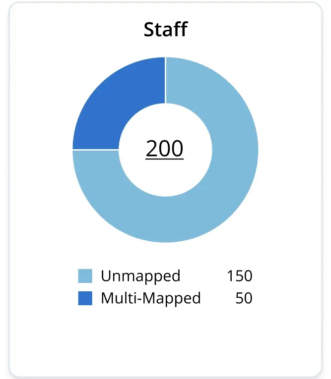
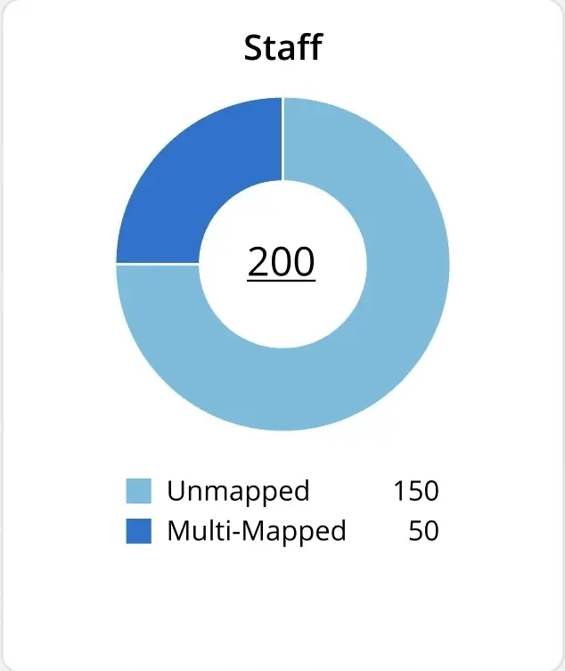
Because stakeholder opinions on what a given metric should look like varied widely, and the graph types needed ranged broadly, I created widget and modal templates early, before development started building one-off versions — every one-off avoided there was cost avoided later across the platform's life. Interactive modals let users visualize and refine data with quick export actions built in, so repetitive data-refinement tasks didn't need a new UI pattern every time they came up.
Modal system
One layout — title, filters, graph, actions, table — reused for each data-refinement task.
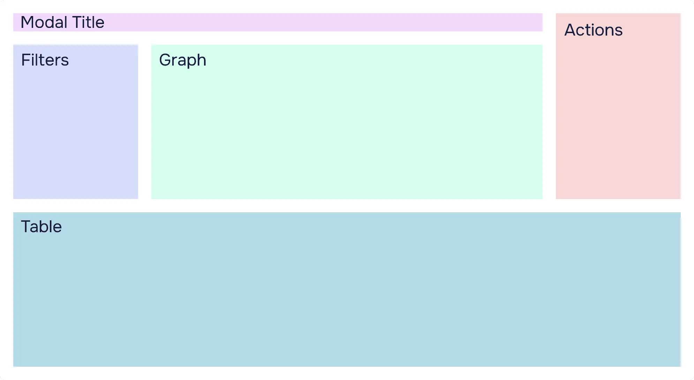
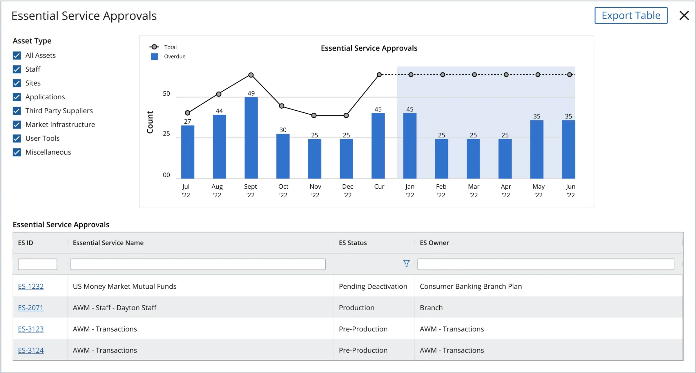
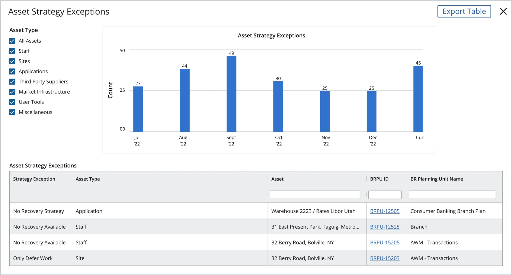
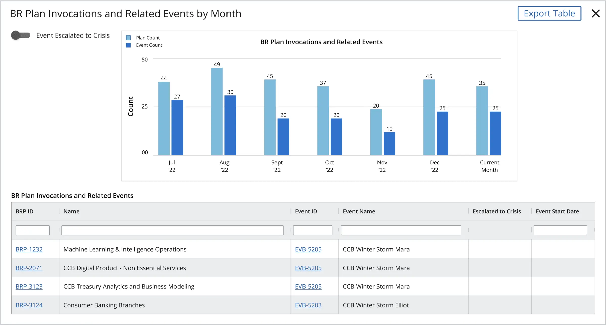
Modal states
Mapped, Unmapped & Multi-Mapped Staff — the modal for the Staff data in Fig. 4, stepped through its toggle and month selection.
ADefault. Both toggles off; unmapped and multi-mapped staff as paired monthly bars.
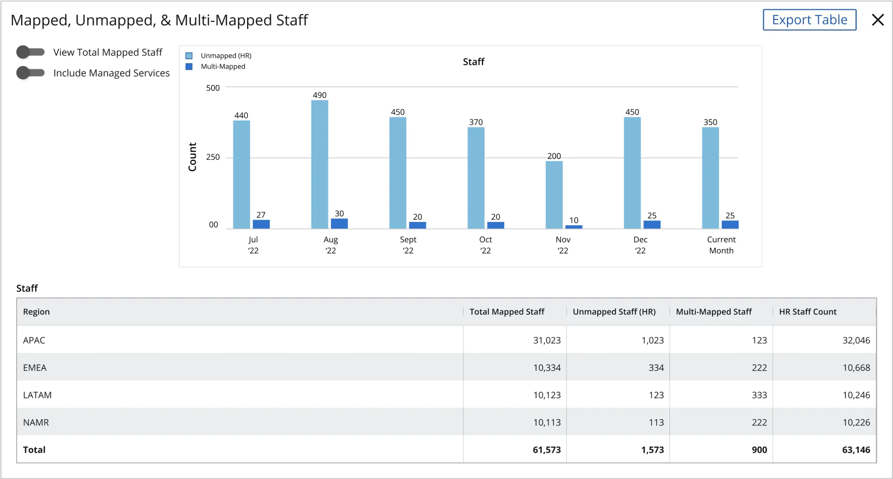
BMonth in focus. Jul ’22 stays at full strength; other months recede.
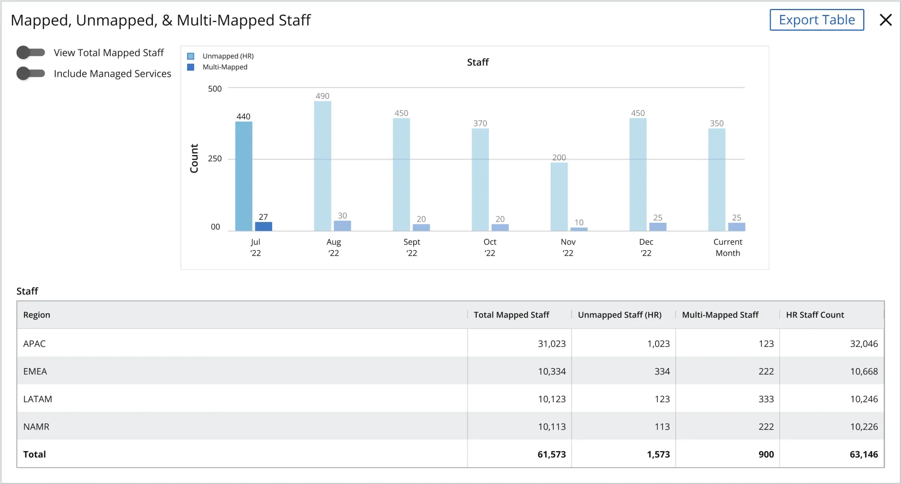
CView Total Mapped Staff on. Total plotted as a line; the bars drop back as context.
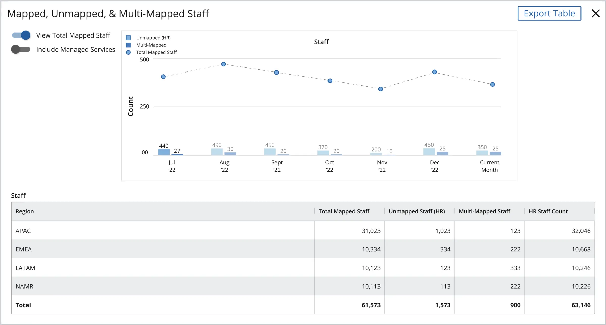
DTotal on, month in focus. Jul ’22 emphasised in both the line and the bars.
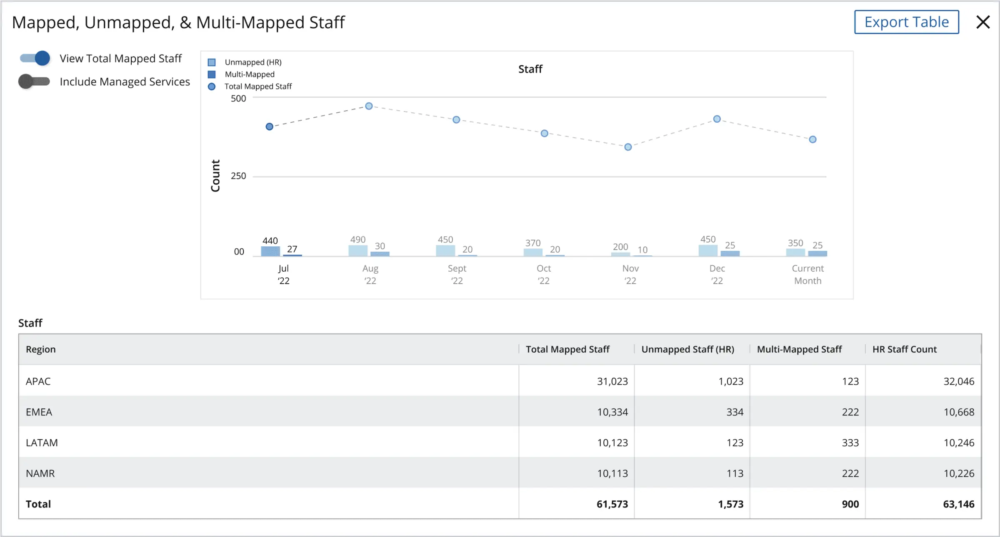
Outcome
ERMA gave J.P. Morgan Chase's resiliency and risk-management teams a modern replacement for decades-old dashboard tooling, built on a widget system designed to stay cost-effective as the bank's reporting needs keep growing rather than requiring a rebuild each time.
“…I want to shout out Fiona for her work with us this quarter. She's stuck with us for a long duration, and she has helped some very strong personalities find their voice with design… and she delivered a great, high quality product with… care.”